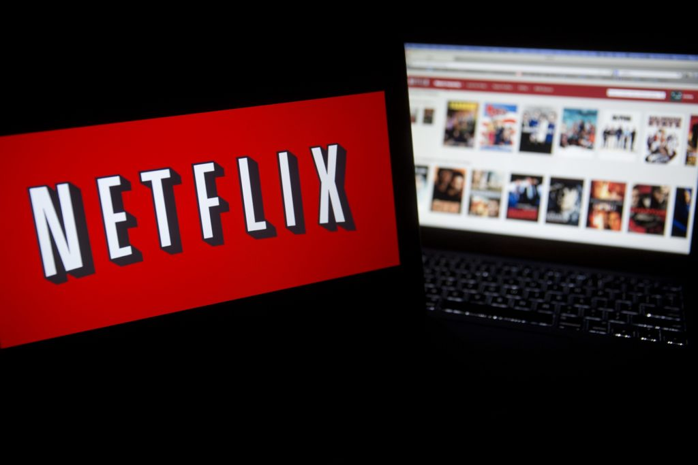
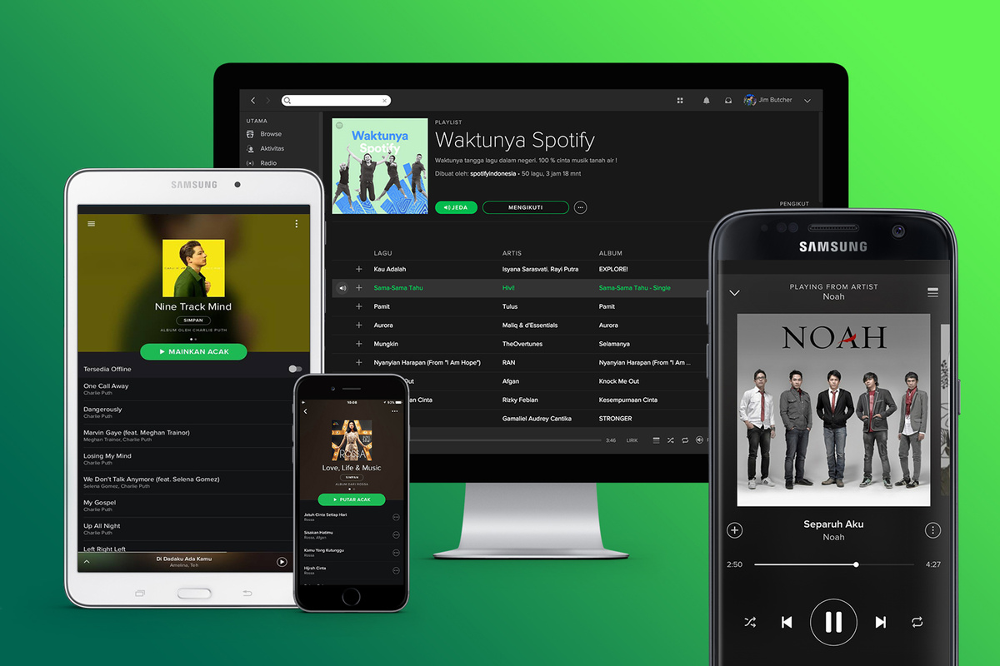

DIGITAL PRODUCTS
Nuestros Servicios
NETFLIX
Netflix, Inc. es una empresa de entretenimiento estadounidense, que opera a nivel mundial, cuyo servicio principal es la distribución de contenidos audiovisuales a través de una plataforma en línea o servicio de VOD (video bajo demanda, por sus siglas en inglés) por retransmisión en directo (en ingles Streaming). Ubicada en Los Gatos, en California, la compañía se crea en 1997 y un año después comienza su actividad ofreciendo un servicio de alquiler de DVD a través del correo postal. Actualmente, Netflix participa en la producción de obras audiovisuales: desde la creación o adquisición del producto, hasta su difusión mundial..
¿Por qué lo usamos?
Netflix funciona con un reproductor basado en Microsoft Silverlight para evitar que se descargue el contenido audiovisual (actualmente ofrece un servicio de descarga de algunas películas o capítulos de serie que sólo pueden ser reproducidos en la aplicación), aunque también cuenta con la opción de usar un reproductor creado con HTML5. Bajo Linux se puede ver Netflix usando el navegador Google Chrome, versión 38 o más reciente. Cuando se entra a una película, Netflix precarga una pequeña parte de ésta antes, para evitar los cortes por almacenamiento en búfer.El servicio que opera Netflix en realidad está basado en más de 700 microservicios que corren independientemente y que se comunican entre sí a través de interfaces de programación de aplicaciones o APIs, por sus siglas en inglés. Cada microservicio está programado para hacer una tarea específica, como por ejemplo cargar las viñetas de presentación de una serie o película recomendada o hacer el cargo mensual de la membresía de cada cuenta. En este sentido, Netflix es un ecosistema de pequeños sistemas con objetivos específicos y no una arquitectura informática monolítica.
¿Que servicios tiene DGJL para mi?
📢👀AQUÍ NUESTRAS TARIFAS PARA Netflix🔥🎥
- 1️⃣ Pantalla = 4$ (4K FULL HD)🔝
- 2️⃣ Pantallas = 6$ (4K FULL HD)🔝
- 4️⃣ Pantallas = 12$ (4K FULL HD)🔝

Las pantallas representan el número de USUARIOS ACTIVOS viendo contenido en la plataforma. Del término (streaming) en inglés.
🔺Dependiendo de sus requerimientos, adquiera el plan que mejor este adaptado a su presupuesto y necesidades🔻.
SPOTIFY
Spotify es una aplicación multiplataforma sueca, empleada para la reproducción de música vía streaming. Cuenta con un modelo de negocio «premium», un servicio gratuito básico y con publicidad; pero con características adicionales, con una mejor calidad de audio, a través de una suscripción de pago. Permite escuchar en «modo radio», buscando por artista, álbum o listas de reproducción creadas por los propios usuarios. El programa se lanzó el 7 de octubre de 2008 al mercado europeo, mientras que su implantación en otros países se realizó a lo largo de 2009. Está disponible para los sistemas operativos Microsoft Windows, Mac OS X, Linux, Windows Phone, Symbian, iOS, Android.
¿Por qué lo usamos?
Spotify ofrece transferencia de archivos de audio por Internet a través de la combinación de servidores dedicados al streaming y en la transferencia de red de pares (P2P) en la que participan los usuarios. Una conexión a Internet de 256 kbit/s es suficiente, y la tasa de bits de las pistas es de 320 kbit/s. Los archivos de audio se pueden reproducir bajo demanda, como si estuvieran en el disco duro del usuario. Las canciones se guardan en la caché del software para evitar consumir más ancho de banda al repetir las canciones una y otra vez. Utiliza el códec de audio Vorbis (Ogg). Los usuarios en modo premium acceden un nivel de calidad de audio superior (q9). El contenido de la caché del software se basa en un índice que sirve para que Spotify conecte con el servicio. Este índice se utiliza para informar a otros clientes sobre otros usuarios que pueden conectarse a los datos para que se reproduzcan las pistas que desea escuchar. Se hace por cada cliente que utiliza el programa; al inicio, actuando como un servidor para escuchar las conexiones entrantes de otros usuarios de Spotify así como la conexión de forma intuitiva a otros usuarios para el intercambio de datos en caché, según proceda. Actualmente no hay datos oficiales de los desarrolladores acerca de cuántas conexiones y la cantidad de ancho de banda que ofrece cada usuario al sistema; el software no ofrece ninguna forma para que el usuario pueda configurar estos parámetros.
¿Que servicios tiene DGJL para mi?
📢👀AQUI NUESTRAS TARIFAS DE SPOTIFY PREMIUM:
- 1️⃣ correo = 3$
- 2️⃣ correos = 6$
- 3️⃣ correos = 8$
- 4️⃣ correos = 10$
- Cuenta completa ( 5 correos)= 12$
#Los precios indicados son el precio a pagar mensualmente por el servicio.👀🔥👍
🔺Los correos están representados por usuarios. ES DECIR ( UN CORREO UN USUARIO).🔻

San Francisco Edo Zulia Venezuela.